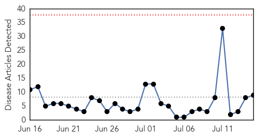
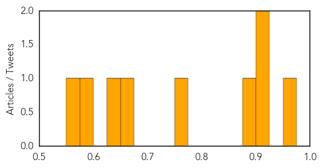

Influenza
30-Day Web Trend
4 alerts, 0 warnings

30-Day Twitter Trend
4 alerts, 0 warnings

Article Locations

Article Confidences

Top Articles:
Top Tweets:
-
No tweets found for Jul 15, 2014
Measles
30-Day Web Trend
0 alerts, 0 warnings

30-Day Twitter Trend
0 alerts, 0 warnings

Article Locations

Article Confidences
Top Articles:
- 0.960
- Commentary: As measles cases soar, it's important to educate and protect ourselves
- 0.919
- More Measles Cases In Kansas
- 0.905
- The most from the coast
- 0.882
- Measles prevention in Sedgwick County
- 0.768
- UN Allocates $1.4 Mln. To Vaccinate Somali Children Against Measles
- 0.656
- Parents making sure kids current with new vaccine requirements
- 0.649
- United Nations funds emergency measles campaign in Somalia
- 0.579
- UN funds emergency measles campaign in Somalia
- 0.559
- Oklahoma Lawmaker Wants Quarantine of Migrant Children Housed in State
Top Tweets:
-
No tweets found for Jul 15, 2014